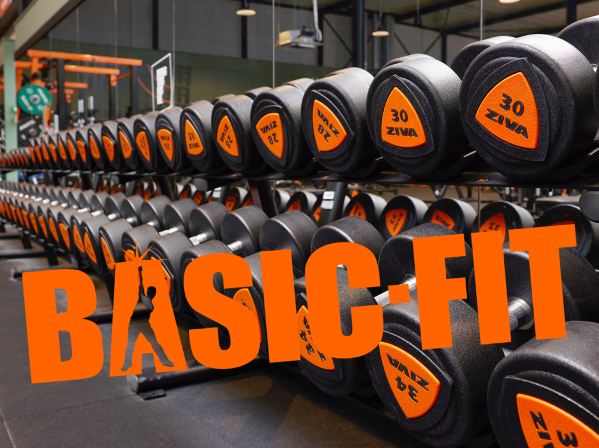

Wat is gym en wat doe je daar?
Een gym of sportschool is een plek waar je kunt trainen en sporten
om je lichaam sterker en gezonder te maken.
Bij de gym kun je bijvoorbeeld:
Krachttraining doen met gewichten of apparaten
Cardio-oefeningen doen, zoals fietsen, rennen of roeien
Groepslessen volgen zoals spinning, zumba of yoga
Gym is goed voor je omdat het helpt om fit en gezond te blijven,
je spieren sterker te maken en je conditie te verbeteren.
Mijn ervaring met gym
Ik train nu al 8 maanden in de gym en mijn lichaam is veel beter en sterker geworden. Een gym is een plek waar je kunt trainen en sporten om je lichaam sterker en gezonder te maken.
Om spieren te krijgen moet je goed eten, goed slapen en goed traienen, want je lichaam heeft voeding nodig en
genoeg rust om sterker te worden. wat je
moet doen is gewichten doen voor elke spier
heb je bepaalde oefeningen die je kan doen
en dat doe je met sets en herhalingen (reps) om je spieren te trainen
